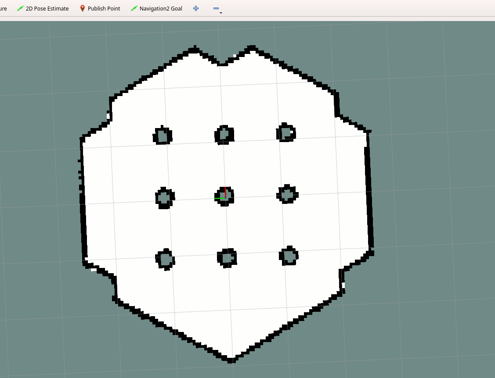

编写新的代价地图2D插件 [校准@fish]
{kind=link}
教程步骤
1写新代价地图2D插件 [校准@fish]
演示，这个例子将创建costmap插件，重复成本梯度costmap。注解码可以找到本教程在 navigation2_tutorials 库的 nav2_gradient_costmap_plugin ROS 2包。请参考时自己层插件代价地图2D。 [校准@fish]
插件类 “nav2 _ 梯度 _ 成本 _ 插件:: 梯度层 `` is inherited from basic class `` nav2 _ 成本 _ 2d:: 层”: [校准@fish]
namespace nav2_gradient_costmap_plugin
{
class GradientLayer : public nav2_costmap_2d::Layer
基本类提供的虚拟方法API处理costmap层插件。这些方法调用在运行 LayeredCostmap 。方法列表，描述必要性这些方法插件代码提出下表: [校准@fish]
虚拟方法 |
方法描述 |
Requires需要覆盖？** [校准@fish] |
onInitialize() [校准@fish] |
方法的末尾调用插件初始化。通常声明ROS参数。这是任何需要初始化应该发生。 [校准@fish] |
不 |
Updatebound () [校准@fish] |
方法问插件: 面积costmap层需要更新。有3输入参数方法: 机器人位置和定位4输出参数: 指针窗口边界。这些边界用于性能原因: 更新区域内窗口是新信息，避免更新整个costmap每次迭代。 [校准@fish] |
是的 |
updateCosts() [校准@fish] |
每次需要重新计算costmap时都会调用方法。它仅在其边界窗口内更新costmap层。方法有4个输入参数: 计算窗口边界和1个输出参数: 参考结果costmap |
是的 |
matchSize() [校准@fish] |
方法每次地图大小改变。 [校准@fish] |
不 |
onFootprintChanged() [校准@fish] |
每次改变足迹时都会调用方法。 [校准@fish] |
不 |
reset() |
可能任何代码执行costmap复位。 [校准@fish] |
是的 |
在我们的示例中，这些方法具有以下功能: [校准@fish]
参数``GradientLayer::onInitialize()`` contains声明ROS参数的默认值: [校准@fish]
declareParameter("enabled", rclcpp::ParameterValue(true));
node_->get_parameter(name_ + "." + "enabled", enabled_);
并设置 need_recalculation_ 边界重新计算指标: [校准@fish]
need_recalculation_ = false;
GradientLayer::updateBounds()re-calculates window bounds ifneed_recalculation_istrueand updates them regardless ofneed_recalculation_value. [校准@fish]参数``GradientLayer::updateCosts()`` - in this method the gradient is writing directly to the resulting costmap
master_gridwithout merging with previous layers. This is equal to working with internalcostmap_and then callingupdateWithTrueOverwrite()method。以下是主成本图的梯度制作算法: [校准@fish]
int gradient_index;
for (int j = min_j; j < max_j; j++) {
// Reset gradient_index each time when reaching the end of re-calculated window
// by OY axis.
gradient_index = 0;
for (int i = min_i; i < max_i; i++) {
int index = master_grid.getIndex(i, j);
// setting the gradient cost
unsigned char cost = (LETHAL_OBSTACLE - gradient_index*GRADIENT_FACTOR)%255;
if (gradient_index <= GRADIENT_SIZE) {
gradient_index++;
} else {
gradient_index = 0;
}
master_array[index] = cost;
}
}
其中 GRADIENT_SIZE 是地图单元中每个梯度周期的大小， GRADIENT_FACTOR -每一步的成本图值的递减: [校准@fish]
这些参数在插件的头文件中定义。 [校准@fish]
2-Export GradientLayer plugin [校准@fish]
书面插件将加载运行时基本父类然后将调用插件处理模块 (costmap2d的 LayeredCostmap )。Pluginlib打开给定插件在运行时提供方法导出类调用。机制类导出告诉pluginlib基本类中使用这些调用。这允许扩展应用插件不知道应用源代码或重新编译它。 [校准@fish]
在我们的示例中，“nav2_gradent_costmap_plugin:: gradentlayer” 插件的类应作为“ nav2_costmap_2d:: layer” 基础类动态加载。为此，插件应按如下方式注册: [校准@fish]
插件的类应该用加载类的基本类型注册。为此，应该将一个特殊的宏
PLUGINLIB_EXPORT_CLASS添加到组成插件库的任何源文件中: [校准@fish]
#include "pluginlib/class_list_macros.hpp"
PLUGINLIB_EXPORT_CLASS(nav2_gradient_costmap_plugin::GradientLayer, nav2_costmap_2d::Layer)
这部分通常放在写插件类的cpp文件的末尾 (在我们的例子中是 gradient_layer.cpp )。最好将这些行放在文件的末尾，但从技术上讲，您也可以放在顶部。 [校准@fish]
插件的信息应该存储到插件描述文件中。这是通过在插件包中使用单独的XML (在我们的示例中是
gradient_plugins.xml) 来完成的。此文件包含以下信息: [校准@fish]
<library path="nav2_gradient_costmap_plugin_core">
<class name="nav2_gradient_costmap_plugin/GradientLayer" type="nav2_gradient_costmap_plugin::GradientLayer" base_class_type="nav2_costmap_2d::Layer">
<description>This is an example plugin which puts repeating costs gradients to costmap</description>
</class>
</library>
插件的导出是通过将 pluginlib_export_plugin_description_file() cmake函数包含到 CMakeLists.txt 中来执行的。此函数将插件描述文件安装到 share 目录中，并设置插件描述XML的属性索引，以便作为所选类型的插件发现: [校准@fish]
pluginlib_export_plugin_description_file(nav2_costmap_2d gradient_layer.xml)
插件描述文件也应该添加到 package.xml 。 costmap_2d 是包的接口定义，我们机箱 Layer ，需要路径xml文件: [校准@fish]
<export>
<costmap_2d plugin="${prefix}/gradient_layer.xml" />
...
</export>
一切完成后把插件封装成 src 目录一定ROS 2-workspace，构建插件包 ( colcon build --packages-select nav2_gradient_costmap_plugin --symlink-install ) 和源 setup.bash 文件有必要。 [校准@fish]
现在插件可以使用了。
3-在代价地图2D中启用插件 [校准@fish]
下一步，需要告知代价地图2D有关新插件的信息。的插件应添加到 plugin_names 和 plugin_types 列表 nav2_params.yaml 可选用 local_costmap / global_costmap 为了启用在运行时间控制器/规划器服务器。 plugin_names 列表包含插件对象的名称。这些名字可以是你想要的任何东西。 plugin_types 包含列在 plugin_names 对象中的类型。这些类型应对应于插件描述XML文件中指定的插件类的 name 字段。 [校准@fish]
注解
用Galactic或后， plugin_names 和 plugin_types 替换单个 plugins string载体插件名称。类型现在定义在 plugin_name 命名空间 ''plugin: `` field (e.g. `` 插件: MyPlugin: Plugin'')。内联注释代码块将帮助您通过这个。 [校准@fish]
例如:
--- a/nav2_bringup/bringup/params/nav2_params.yaml
+++ b/nav2_bringup/bringup/params/nav2_params.yaml
@@ -124,8 +124,8 @@ local_costmap:
width: 3
height: 3
resolution: 0.05
- plugin_names: ["obstacle_layer", "voxel_layer", "inflation_layer"] # For Eloquent and earlier
- plugin_types: ["nav2_costmap_2d::ObstacleLayer", "nav2_costmap_2d::VoxelLayer", "nav2_costmap_2d::InflationLayer"] # For Eloquent and earlier
+ plugin_names: ["obstacle_layer", "voxel_layer", "gradient_layer"] # For Eloquent and earlier
+ plugin_types: ["nav2_costmap_2d::ObstacleLayer", "nav2_costmap_2d::VoxelLayer", "nav2_gradient_costmap_plugin/GradientLayer"] # For Eloquent and earlier
- plugins: ["obstacle_layer", "voxel_layer", "inflation_layer"] # For Foxy and later
+ plugins: ["obstacle_layer", "voxel_layer", "gradient_layer"] # For Foxy and later
robot_radius: 0.22
inflation_layer:
cost_scaling_factor: 3.0
@@ -171,8 +171,8 @@ global_costmap:
robot_base_frame: base_link
global_frame: map
use_sim_time: True
- plugin_names: ["static_layer", "obstacle_layer", "voxel_layer", "inflation_layer"] # For Eloquent and earlier
- plugin_types: ["nav2_costmap_2d::StaticLayer", "nav2_costmap_2d::ObstacleLayer", "nav2_costmap_2d::VoxelLayer", "nav2_costmap_2d::InflationLayer"] # For Eloquent and earlier
+ plugin_names: ["static_layer", "obstacle_layer", "voxel_layer", "gradient_layer"] # For Eloquent and earlier
+ plugin_types: ["nav2_costmap_2d::StaticLayer", "nav2_costmap_2d::ObstacleLayer", "nav2_costmap_2d::VoxelLayer", "nav2_gradient_costmap_plugin/GradientLayer"] # For Eloquent and earlier
- plugins: ["static_layer", "obstacle_layer", "voxel_layer", "inflation_layer"] # For Foxy and later
+ plugins: ["static_layer", "obstacle_layer", "voxel_layer", "gradient_layer"] # For Foxy and later
robot_radius: 0.22
resolution: 0.05
obstacle_layer:
YAML-file还可能包含每个插件的参数列表 (如果有)，由插件对象名称标识。 [校准@fish]
注意: 可能有许多同时加载的一种类型的插件对象。为此， plugin_names 列表应包含不同的插件名称，无论 plugin_types 是否保持相同类型。例如: [校准@fish]
plugin_names: ["obstacle_layer", "gradient_layer_1", "gradient_layer_2"] # For Eloquent and earlier
plugin_types: ["nav2_costmap_2d::ObstacleLayer", "nav2_gradient_costmap_plugin/GradientLayer", "nav2_gradient_costmap_plugin/GradientLayer"] # For Eloquent and earlier
plugins: ["obstacle_layer", "gradient_layer_1", "gradient_layer_2"] # For Foxy and later
在这种情况下，每个插件对象将由其自己的YAML文件中的参数树处理，例如: [校准@fish]
gradient_layer_1:
plugin: nav2_gradient_costmap_plugin/GradientLayer # For Foxy and later
enabled: True
...
gradient_layer_2:
plugin: nav2_gradient_costmap_plugin/GradientLayer # For Foxy and later
enabled: False
...
{kind=link}